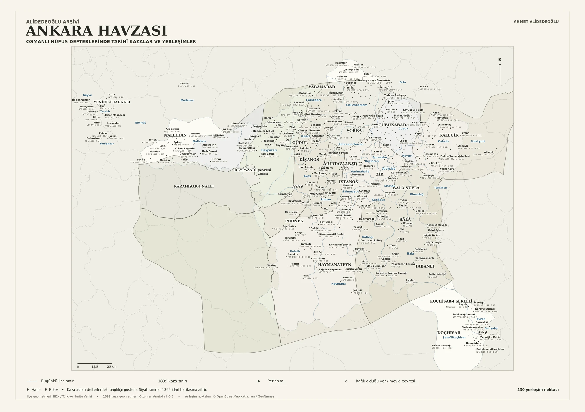

Osmanlı Nüfus Defterlerinde Ankara Havzası
Bugün Çubuk’a bağlı Yıldırımevci çevresinde yer alan Yıldırım Dere, Osmanlı nüfus defterinde Şorba kazasına bağlı bir köy olarak geçer. BOA NFS.d. 1794, varak 108 kaydında köyde 4 hane ve 18 erkek yazılıdır. Ankara Havzası Tarihî Yerleşim Haritası, bu örnekte olduğu gibi, defterlerdeki köyleri hem tarihî kazalarıyla hem de bugünkü bağlılıklarıyla gösteriyor.


Haritada Yabanâbâd, Şorba, Çubukâbâd, Zîr, Murtazaâbâd, Haymanateyn, Tabanlı ve Koçhisar gibi tarihî kaza ve bölge adları yer alıyor. Ankara’nın bugünkü 25 ilçesinin sınırı mavi kesik çizgilerle, 1899 Osmanlı idarî haritasındaki kaza sınırları koyu çizgilerle gösteriliyor. Bir yerleşimin 1835–1843 dönemindeki bağlılığı ise kendi nüfus defterindeki kaza başlığından okunuyor.
Defterlerdeki köyler bugün nerede?
BOA NFS.d. 1510 numaralı 1839 tarihli Yenice-i Taraklı defterinde Bilyas 17 hane, Katran 30 hane, Selim 41 hane olarak kayıtlıdır. Bilyas bugün Sakarya’nın Taraklı ilçesine bağlı Çamtepe Mahallesi adını taşır. Katran ve Selim ise günümüzde Bilecik’in Yenipazar ilçesine bağlıdır. Aynı defterde yer alan bu üç köyün bugün iki ayrı ilde bulunması, eski kaza coğrafyasının bugünkü il ve ilçe sınırlarını nasıl aştığını gösterir.
Bazı yerleşimlerin eski adları da bugünkü adlarıyla birlikte haritaya işlendi. Güneyviran, bugün Beypazarı’nın Aşağıgüney Mahallesi olarak bilinir. Köyün temettuat kaydı BOA ML.VRD.TMT.d. 325 numarasıyla gösterilmiştir.
Haritada 430 yerleşim noktasına bağlı 529 kayıt bulunuyor. Etkileşimli haritada bir köyün üzerine tıklandığında tarihî adı, kazası, bugünkü yeri ve defter künyesi açılıyor. Defterde bulunduğu yerde sayfa, varak, hane ve erkek sayısı da gösteriliyor. Erkek sayısı, ilgili defterde yazılı erkek nüfusu ifade ediyor.